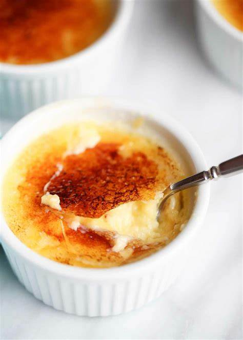

Creme Brulee Recipe

Ingredients
- 1 cup heavy cream
- 3 tablespoons white sugar
- 3 large egg yolks
- 1/4 teaspoon vanilla extract
- 2 tablespoons white sugar, divided
Steps
- Preheat the oven to 350 degrees F (175 degrees C).
-
Whisk together cream and 3 tablespoons sugar in a microwave-safe
bowl until combined. Cook in the microwave until warm, 1 to 2
minutes; whisk again to dissolve sugar. Whisk in egg yolks and
vanilla until smooth.
-
Pour cream mixture into 2 ramekins set in a roasting pan. Pour
enough hot water into the pan to reach halfway up the sides of the
ramekins.
-
Bake in the preheated oven until custard is set but slightly jiggly
in the center when shaken, about 50 minutes. Remove ramekins from
hot water and chill in the refrigerator until cold, at least 2 hours.
-
Sprinkle 1 tablespoon sugar evenly over the top of each dessert.
Use a kitchen torch to melt and lightly toast sugar topping until
brown and bubbly, about 30 seconds. Let sugar topping cool to harden
before serving.